7.5. Simulated Annealing (SA)
In 1983, the world of combinatorial optimization was literally shattered by a paper of Kirkpatrick et al. [Kirkpatrick1983] in which it was shown that a new heuristic approach called Simulated Annealing could converge to an optimal solution of a combinatorial problem, albeit in infinite computing time[1]. This was really unheard of: an heuristic that could converge, if you give it the time, to an optimal solution! This new approach spurred the interest of the research community and opened a new domain of what is now known as meta-heuristic algorithms.
We first present the basic idea of SA, keeping a eye on our basic implementation that we present in details next. As with Tabu Search, we present some first results on the Job-Shop Problem.
7.5.1. The basic idea
We describe the meta-heuristic as it is generally presented. Our implementation is a little bit different.
The basic idea of the SA algorithm is to decide if a given neighbor (candidate solution) in the neighborhood 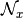 of a solution  should
be accepted or not. This is done probabilistically: a solution may or may not be accepted given a certain probability 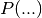.
This probability evolves with time and becomes lower and lower such that at the beginning of the algorithm a large part of the
search space can be reached and slowly but surely the probability converges toward 0 and the algorithm focuses on one (final) neighborhood. We say that the system moves toward states of lower energy.
should
be accepted or not. This is done probabilistically: a solution may or may not be accepted given a certain probability 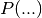.
This probability evolves with time and becomes lower and lower such that at the beginning of the algorithm a large part of the
search space can be reached and slowly but surely the probability converges toward 0 and the algorithm focuses on one (final) neighborhood. We say that the system moves toward states of lower energy.
These probabilities (usually) depend on three factors:
- energy levels 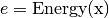 of the current solution and of the solution ;
- the temperature 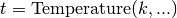 of the system at a given iteration
 .
.
and we write 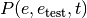.
The algorithm stops when reaching an energy level that is low enough or if the reaches 0 (or any other desired condition). To be more precise, let’s look at a pseudo-code of the general SA algorithm:
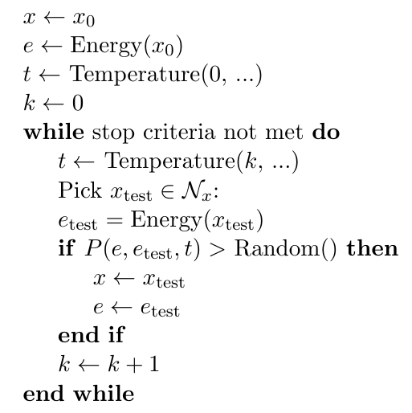Three functions are used:
- : measures the energy of the whole system: the smaller the better. Think about the objective function in a minimization problem for instance. We seek to minimize the energy level of the system.
- : to mimic the annealing in metallurgy, temperature should decrease with time and the system sees its energy level decrease. This function should decrease with each iteration.
- 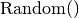: this function returns a probability. i.e. a value between 0,0 and 1,0. It follows a certain probabilistic law and any law can be used. Of course, the choice of the law influences the algorithm.
7.5.1.1. Initialization
The initialization is quite simple: start with an initial solution (in or-tools: a local optimum)  and compute its energy level 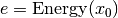. The initial temperature plays
an important role in the algorithm:
higher means that the algorithm (theoretically) has more chances of converging toward a global optimum [Granville1994]. However, it also means that the algorithm will take much longer to converge.
and compute its energy level 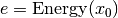. The initial temperature plays
an important role in the algorithm:
higher means that the algorithm (theoretically) has more chances of converging toward a global optimum [Granville1994]. However, it also means that the algorithm will take much longer to converge.
7.5.1.2. Stopping criteria
The usual stopping criteria can be used. However, often, a limited number of iterations are allowed as we need the 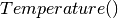 to decrease towards 0 to compute the transition/acceptance probabilities and let the algorithm converge.
7.5.1.3. Acceptance probabilities
The algorithm accepts or rejects a new solution depending on the computed acceptance probabilities . When the temperature decreases towards 0 with time, this
probability should converge towards 0 when  , i.e. the algorithm only accepts new states if their energy level is lower than the energy level of the current (last) state.
The classical aspiration criteria is to accept any solution that is better, i.e. 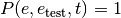 if . For the algorithm to be able to escape a local optimum, it
must be able to move towards solution of higher energy, i.e. 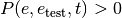 even if .
, i.e. the algorithm only accepts new states if their energy level is lower than the energy level of the current (last) state.
The classical aspiration criteria is to accept any solution that is better, i.e. 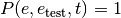 if . For the algorithm to be able to escape a local optimum, it
must be able to move towards solution of higher energy, i.e. 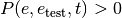 even if .
The way these probabilities are computed is really problem dependent and is a key operation for a good convergence of the algorithm.
States or iterations?
Each meta-heuristic has its own vocabulary and SA is no exception. Broadly speaking, a state corresponds to an accepted solution by the SA algorithm while each test of a neighbor (candidate solution) is
considered as an iteration . Typically, the Temperature(...) depends on the current iteration and we speak about the energy level of a state (even if we compute this energy level at each iteration).
Why is it called Simulated Annealing?
The name comes from annealing in metallurgy, a technique involving heating and controlled cooling of a material to increase the size of its crystals and reduce their defects. SA’s algorithm decreases slowly but surely the probability of accepting worse solutions as time passes.
7.5.2. Our implementation[2]
Our implementation is a simplified version of the SA algorithm.
Warning
Our basic implementation of the SA algorithm differs slightly from the classical implementation.
7.5.2.1. The constructor and the variables
Let’s start with the (private) variables of the SimulatedAnnealing class:
const int64 temperature0_;
int64 iteration_;
ACMRandom rand_;
bool found_initial_solution_;
Most variables are self-explanatory. The ACMRandom rand_ variable is our random generator as we need some randomness to generate the probabilities at each iteration. An iteration is obtained each time we choose a new neighbor (candidate) solution.
The constructor is quite straightforward:
SimulatedAnnealing(Solver* const s, bool maximize,
IntVar* objective, int64 step,
int64 initial_temperature)
: Metaheuristic(s, maximize, objective, step),
temperature0_(initial_temperature),
iteration_(0),
rand_(654),
found_initial_solution_(false) {}
7.5.2.2. The temperature schedule
To compute the temperature for each iteration, we use the following (private) method:
float Temperature() const {
if (iteration_ > 0) {
return (1.0 * temperature0_) / iteration_; // Cauchy annealing
} else {
return 0.;
}
}
7.5.2.3. LocalOptimum()
As you know by now, this is the callback that triggers the meta-heuristic and we set our iteration counter to 1 when this method is called for the first time.
bool LocalOptimum() {
if (maximize_) {
current_ = kint64min;
} else {
current_ = kint64max;
}
++iteration_;
return found_initial_solution_ && Temperature() > 0;
}
You might be surprised by the redundant test of Temperature() but our code might change in the future and we need the temperature to be greater than 0. This is called defensive programming.
7.5.2.4. AcceptNeighbor()
As in the Tabu Search, we increase our iteration counter for each accepted solution:
void AcceptNeighbor() {
if (iteration_ > 0) {
++iteration_;
}
}
This is only done if we already have reached a local optimum.
7.5.2.5. AtSolution()
We simply return true to resume the search:
bool AtSolution() {
if (!Metaheuristic::AtSolution()) {
return false;
}
found_initial_solution_ = true;
return true;
}
In our basic version, the temperature only depends on the iteration.
7.5.2.6. ApplyDecision()
This is again the place to add some constraints to manage the search. We show the code first and discuss it after:
1 2 3 4 5 6 7 8 9 10 11 12 13 14 15 16 17 18 19 20 | void ApplyDecision(Decision* const d) {
Solver* const s = solver();
if (d == s->balancing_decision()) {
return;
}
const int64 energy_bound = Temperature() * log2(rand_.RndFloat());
if (maximize_) {
const int64 bound =
(current_ > kint64min) ? current_ + step_ + energy_bound :
current_;
s->AddConstraint(s->MakeGreaterOrEqual(objective_, bound));
} else {
const int64 bound =
(current_ < kint64max) ? current_ - step_ - energy_bound :
current_;
s->AddConstraint(s->MakeLessOrEqual(objective_, bound));
}
}
|
Code on lines 3 to 5 is to avoid any BalancingDecision. On line 7, we compute an energy bound: this bound converges toward 0 with the temperature converging towards 0. Lines 9 to 19 compute a new bound for the objective value. Let’s focus on the minimization case. The energy bound is always negative (rand_.RndFloat() returns a float between 0.0 (excluded) and 1.0), so the bound is always positive or 0. The higher this bound, the more likely the Local Search can escape a local optimum by accepting worse solutions. With time, as the temperature decreases, this bound converges towards the classical bound current_ - step_ which is the bound used in a regular Local Search: we only go downhill.
Is SA really efficient?
Among the three meta-heuristic we describe in this manual (Tabu Search, Guided Local Search and SA), SA is certainly the most basic one. Simulated annealing can be seen as a random walk on a search graph (See [Michiels2007] for instance). This means that a basic version of SA is unlikely to give good results. As we said above, SA was one of the first meta-heuristic on the market. Again, the implementation details are very important and a good SA implementation can beat a sloppy Tabu Search for instance. Moreover, SA is, as all meta-heuristics are, a canvas that can be further explored and transformed.
7.5.3. First results
As with the Tabu Search, we’ll try to improve the search coded in jobshop_ls1.cc from the previous chapter. You can find the code in the file jobshop_sa1.cc. We only use the SwapIntervals LocalSearchOperator in the Local Search to solve the Job-Shop Problem because we want to quickly reach a Local Optimum and compare both Local Searches with and without Simulated Annealing. We also use the same SearchLimits to stop the search.
Again, we don’t use an OptimizeVar variable for the objective function as we let the SimulatedAnnealing Metaheuristic do its job.
The factory method is the following:
SearchMonitor* Solver::MakeSimulatedAnnealing(bool maximize,
IntVar* const v,
int64 step,
int64 initial_temperature) {
return RevAlloc(
new SimulatedAnnealing(this, maximize, v, step, initial_temperature));
}
and we use it like so:
SearchMonitor * simulated_annealing = solver.MakeSimulatedAnnealing(
false,
objective_var,
1,
FLAGS_initial_temperature);
We don’t post any result as this version is too basic to improve on the local optimum found in the previous chapter. You can see that the search tries to escape this local optimum but without luck: the Local Search is really trapped even when we start with a very high temperature. We can see that the efficiency of the algorithm also depends on the LocalSearchOperators used. In this case, this operator simply cycles between a set of solutions.
Will we have better luck if we use the two LocalSearchOperators as in file jobshop_ls3.cc? Let’s try. The code is in the file jobshop_sa2.cc[3]. We don’t present any code here as the changes are similar to what was done in file jobshop_ts2.cc to add Tabu Search.
With different initial temperatures, we obtain the same result: a better value of 1016 (coming from a local optimum of 1051). Not bad but still far from the optimal value 679. The reason is again that our LocalSearchOperators cycle through some solutions and don’t visit the whole search space.
Footnotes
| [1] | This is a theoretical result. In practice, the SA algorithm converges very slowly and visiting the complete search tree would probably take less time! |
| [2] | We don’t re-detail the utility of each SearchMonitor callback. Read previous section on the Tabu Search to refresh your memory if needed. |
| [3] | We use an OptimizeVar in file jobshop_sa2.cc because the initial solution is found by Local Search. The OptimizeVar variable is not used in the Simulated Annealing. |
Bibliography
| [Kirkpatrick1983] | S. Kirkpatrick, C. D. Gelatt Jr., M. P. Vecchi. Optimization by Simulated Annealing. Science. New Series, Vol. 220, No. 4598, 1983, pp. 671-680. |
| [Granville1994] |
|
| [Michiels2007] | W. Michiels, E. Aarts and J. Korst, Chapter 8: Asymptotic Convergence of Simulated Annealing in Theoretical Aspects of Local Search, Monographs in Theoretical Computer Science, Springer, 2007 |
Google or-tools |
User's Manual
Google search
Welcome
Tutorial examples
Current chapter
7. Meta-heuristics: several previous problems
Previous section
Next section
7.6. Guided Local Search (GLS)